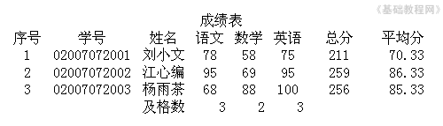
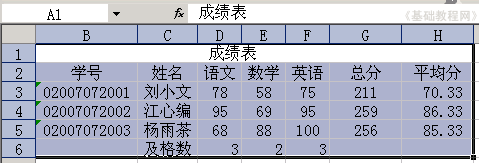
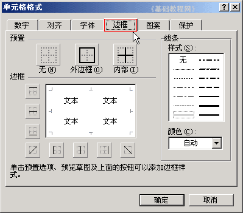
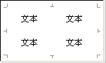
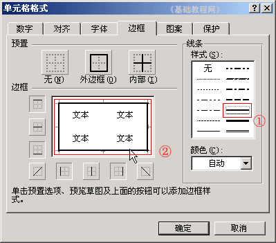
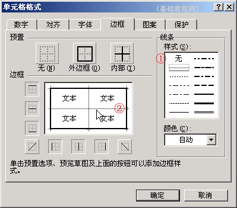
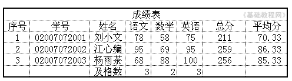

Excel 基础入门教程
表格边框 返回
Excel中的表格线是一种参考线，如果要打印出来，还需要添加上边框线，下面我们来看一个练习；
1、启动Excel
1）点击“开始－所有程序－Microsoft－Microsoft Office Excel 2003”；
2）出现一个满是格子的空白窗口，这就是一张电子表格了，第一个格子看着边框要粗一些，处于选中状态；

2、Excel窗口
1）点菜单“文件－打开”命令，打开上次的“成绩表”文件；
2）点菜单“文件－打印预览”命令，出来一个预览窗口，可以发现没有表格线；
如果提示没有打印机，可以安装一款虚拟打印机(virtual pdf printer)：http://www.newhua.com/soft/21190.htm

3）点上边的“关闭”按钮返回到表格窗口，准备画边框；
从左上角A1单元格开始，框选到右下角的85.33下面的单元格H6；

4）瞄准蓝紫色敲右键，选“设置单元格格式”命令，在弹出的面板中选择上边的“边框”标签；

5）看一下左边的白色区域，现在里面还没有表格线，这儿对应表格内容，现在只有内部的文本，
边框分为四周的外边框，和内部的边框线，

6）在右边的线条里，选择倒数第三个的黑线条，在左边白色区域的四周分别点一下，画出外边框；

7）再选中右边第一个虚线，在左边白色区域中点两下，添加两条内部线，点“确定”按钮，回到表格中；

这时候再点菜单“文件－打印预览”命令，就可以看到表格线了，保存一下文件；

本节学习了Excel中表格线的设置方法，如果你成功地完成了练习，请继续学习；
本教程由86团学校TeliuTe制作|著作权所有
基础教程网：http://teliute.org/
美丽的校园……
转载和引用本站内容，请保留作者和本站链接。